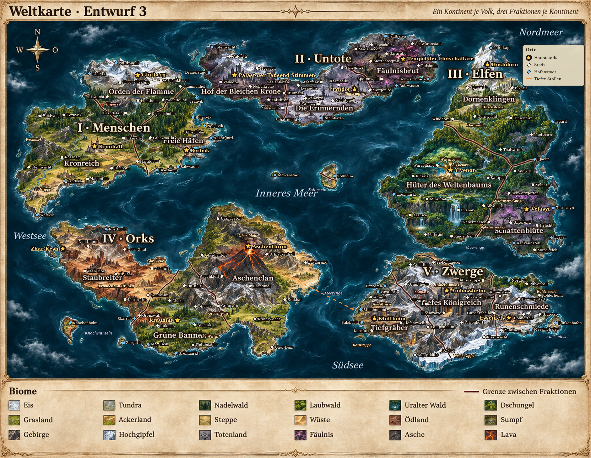

Die fünf Kontinente
Die Welt heißt Odris. Um das Innere Meer liegen die Länder der Menschen, Elfen, Orks und Zwerge. Jenseits des Nordmeers erstreckt sich der Kontinent der Untoten. Die Karte zeigt die Machtgebiete und ihre Siedlungen.
Die spielbare Reise beginnt auf den Feldern bei Kornwik im Kronreich. Über Heidvang führt sie nach Eiswacht und zum Eispass im Land des Ordens der Flamme. Jenseits des Passes liegt das untere Runentor am Glutberg.

Völker und Fraktionen
Klassensystem
Vorgabe von Henry, 17. 11. 2026. Der vollständige Text steht auch in KLASSEN.md.
Chronik
Die Jahreszahlen folgen der menschlichen Zeitrechnung. Ihr Beginn ist die Einigung.
- Um 4400 v. E.
- In der Nacht des Ersten Blutes binden die Aethari ihre Lebenskraft an den Blutbrunnen von Eryndor. Aus ihnen gehen die ersten Vampire hervor.
- Um 2500 v. E.
- Aldric Vaelthar III. versucht, den Tod aus seinem Reich zu verbannen. Seine Untertanen werden zu Geistern. Seine eigene Seele bindet sich an die Krone.
- Um 900 v. E.
- Die ersten Fleischrituale leiten den Aufstieg der Fäulnisbrut ein.
- Um 150 v. E.
- Ghor-Mahr bricht aus. Der Aschenwinter zerreißt das Großbanner der Orks.
- 0 n. E.
- Harald I. einigt die Stämme der Menschen auf dem Großen Thing. Das Alte Reich entsteht.
- Um 340 n. E.
- In der Langen Nacht greift der Hof der Bleichen Krone die Nordküste der Menschen an.
- 342 n. E.
- Das Erste Feuer wird zum Ursprung des Ordens der Flamme.
- 410 n. E.
- Die drei Reiche der Untoten führen Krieg gegeneinander. An der Menschenküste entstehen im selben Jahr die Freien Häfen.
- Seit etwa 560 n. E.
- Die Tiefgräber treiben von Stollenmund aus den Tiefen Stollen unter der Meerenge in Richtung Ghor-Mahr.
- Um 612 n. E.
- Der Waffenstillstand im Norden hält. Die Fäulnis wächst, der Weltenbaum welkt und Ghor-Mahr grollt wieder.
Bildtafeln
Einige Tafeln verwenden frühere Jahreszahlen. Die Chronik oben folgt den Völkertexten.


Quelltexte
Die vollständigen Quellen zur Spielwelt mit Detailkarten, Gleichgewicht der Welt, Spielwerten, Städten, Dörfern und Hauptquests. Wo Karte und Völkerdokument voneinander abweichen, gilt das Dokument.